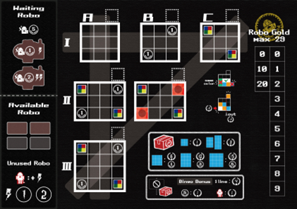
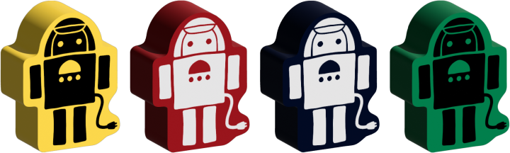
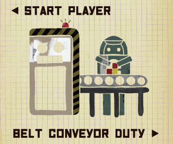
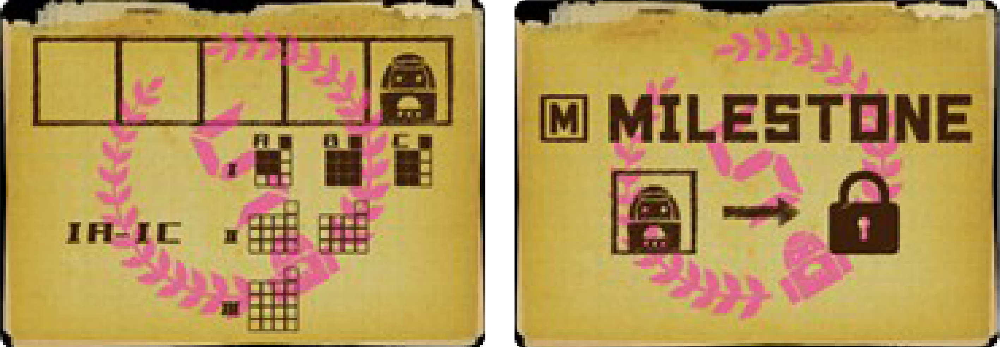
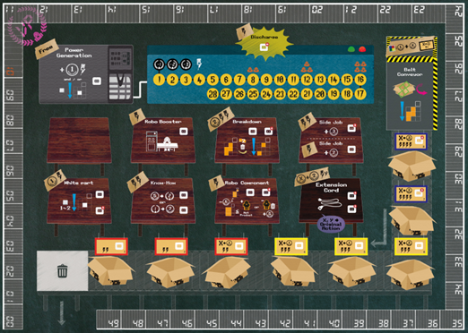

ロボファクチュア 工場運営マニュアル(ゲームルール)※整備中
目次
プロローグ(仮)
かつて人類が使用していた小さな工場がありました。 管理人たちは、その工場とぽんこつな据置型ロボ、廃棄処分寸前のパーツを組み合わせて製品の製造・出荷してこの寂れた工場を立て直そうと画策したのです。 電気は最低限供給され、その中でやりくりをする必要があります。 稼働できるロボが増えれば、少しだけ電気供給は増やしてもらえます。 ただし、ロボは電気がなければ動かないし、工場の設備の使用は早い者勝ちです。 そんな中、誰よりも効率よく製品を製造出荷し、工場を上手く回せるのは誰でしょうか！？
コンポーネント
※I、O は数字と識別が困難であるため欠番
- A ロボファクチュア 工場運営マニュアル(ルールブック、本書) 1部
- B 化粧箱 (A4サイズ、深さ50mm見込み)
-
D 加工場ボード (A4サイズ) 4色 各1枚 
- E サマリーカード (ポーカーサイズ、88×63mm) 4枚or8枚
-
F ロボ駒(ワーカー駒) 4色 4個 
- G パーソナルマーカー (12×12mm) 4色 各5枚
-
H VPマーカー *1 (20×30mm？) 4色 各1枚 -
J 電気マーカー (円形、直径15mm) 黒 1枚、黄 4枚 -
K スタートプレイヤーマーカー 
-
L RGマーカー *2 (円形、直径15mm) 8枚 -
M パーツタイル 
- ペントミノ (5ブロック、36×36mm)
- M字、L字、T字 各6枚
- テトリミノ (4ブロック、24×36mm)
- L字、T字 各12枚、S字 6枚
- トロミノ (3ブロック、24×24mm)
- L字 12枚
- トロミノ (3ブロック、36×12mm)
- まっすぐ 12枚
- モノミノ (1ブロック、12×12mm)
- 5色 各25枚
- N パーツバッグ 3枚
-
P マイルストーンカード 8枚 
- Q 追加アクションカード 5枚(予定)

(以下は検討中)
- R ボットカード(オートマ的なやつ) 20枚くらい
- S ゴミ箱(なくてもゲームは成立するけどあったほうが雰囲気出るやつ) 1個
- T 汎用マーカー 5〜6個
注釈 *1 VP(Victory Point) ：勝利点、これが一番多いプレイヤーが勝者となる *2 RG(Robo Gold) ：ロボゴールド→このゲームで使用されるお金の単位
※以下は2～4人プレイの場合の準備、ゲームの説明になります。 ソロルールは出来次第最後に追加します。
ゲームの準備

※アルファベットはコンポーネントに対応しています。
1. 【C】
工場ボードをテーブルの中央に配置します。
2. 【C、D、E、F、G】
各プレイヤーはプレイヤーカラーを赤、青、黄、緑の中から一色選びます。 対応する色のパーソナルボードを1枚ずつ受け取り、各プレイヤーのそばに配置します。
同色のロボ駒、パーソナルトークンを受け取ります。 ロボ駒4つのうち2つはパーソナルボード左側の手前にある Available Robo (使用可能なロボ)置き場の色がついた箇所に立てて配置し、残りの2つは奥の Waiting Robo (待機中のロボ)置き場に寝かせて配置します。
パーソナルトークンは全てパーソナルボードの脇に置いておきます。 3人プレイの場合は、選択されなかった色のロボ駒を NPC ロボ駒として、工場ボードの「4」のバッジのついたコンセント(*1)の上に、2人プレイの場合は更に「3」のバッジのついたコンセントの上に寝かせて起きます。 これは対象のコンセントが使用できないことを表しています。 詳細は下の図を参照してください(図作成中)。
必要に応じてサマリーカードを受け取ります。
*1 コンセント ：ロボがアクションをするために必要な電気を使用するためのもの 空いているコンセントがないアクションは原則実行不可能
3. 【C、H】
各プレイヤーのVPマーカーを工場ボードの得点トラックの「10」の上に配置します(10VPでスタートします)。
4. 【C、D、J】
電気マーカーの1枚を工場ボードの蓄電メーターの対応する数字の上に配置します。
- 2人プレイ
- 8
- 3人プレイ
- 12
- 4人プレイ
- 16
各プレイヤーは1枚ずつ電気マーカーを受け取り、パーソナルボードの脇に置きます。
5. 【K、L】
最近据置型の人型ロボットを工場で労働させた人が最初のスタートプレイヤーになります。 いない場合はじゃんけん等適当な方法でスタートプレイヤーを決めます。
スタートプレイヤーのパーソナルボードの右横にスタートプレイヤーマーカーを置きます。 各プレイヤーは下記の通り初期資源を得ます。下の図を参照してください。
- スタートプレイヤー
- なし
- 2番手のプレイヤー
- 1RG
- 3番手のプレイヤー
- 1RG＋任意のモノミノタイル1枚
- 4番手のプレイヤー
- 1RG＋任意のモノミノタイル2枚
6. 【M、N】
使用するトロミノ、テトリミノ、ペントミノのパーツタイルは各種パーツバッグに分けて入れます。 使用するタイルは下記の通りです。
- 2人プレイ
-
下記のうちプレイヤーカラーのブロックを含まないタイル
- ペントミノ→L字、T字
- テトリミノ→L字、S字
- トロミノ→全て使用
- 3人プレイ
-
- ペントミノ→L字、T字
- テトリミノ→L字、T字
- トロミノ→全て使用
- 4人プレイ
- 全て使用
モノミノはまとめて脇に置きます。 使用するモノミノタイルは下記の通りです。
- 2人プレイ
- 各色10枚
- 3人プレイ
- 各色15枚
- 4人プレイ
- 各色20枚
各プレイヤーが取りやすいように複数に分けるとよいでしょう。
7. 【P】
マイルストーンカードをランダムにプレイヤー人数分＋2枚選出して、工場ボードの上側に表を上にして並べます。 残ったカードは使用しないので箱にしまいます。
リソースの管理方法
- VP (Victory Point、 勝利点)
- 工場ボードの端を囲っているのが得点トラックになり、VPマーカーを得点トラックに配置することで勝利点を表します。 最初は表向き(VPと記載されている方が上)に10VPに配置し、VPを獲得する際はマーカーを時計回りに移動させ、マイナス点が発生した場合は反時計回りに移動させます。 なお、最低点数は0VPとなり、これ以上下がることはありません。 50点を超えた場合は、マーカーを裏向き(50と記載されている方が上)にして使用します。
- 電気
- パーソナル工場ボードの上側で、電気マーカーで残り使用可能な量を表します。 最初は規定量(プレイヤー人数×4)にマーカーを配置し、アクションの度に使用電気量分数値を減らしていきます。 黄色いマスが残り使用可能な量となります。 黒いマスは停電が発生し、外部から電気を購入しなければならない状況を表しています。
- RG (Robo Gold)
- パーソナルボードの右側にて、2枚のRGマーカーで所持量を表します。 1枚は十の位、もう1枚は一の位を表します。 所持可能なRGは29までで、これよりも多くのRGを所持することはできません。
- パーツタイル
- パーツタイルは主にベルトコンベア当番が管理しますが、いつでもすべてのプレイヤーはパーツバッグに手を入れて残りのパーツタイルの数を探ることができます。 ただし、実際に取り出して確認することはできません。
ゲームの構成
このゲームは以下の構成となります。 B〜Dを一つのラウンドとして扱い、ラウンドは終了フラグが立つまで繰り返します。
- A スタートフェイズ
- B 供給フェイズ
- C アクションフェイズ
- D クリーンナップフェイズ
- E エンドフェイズ
ゲームの流れ
このゲームは終了条件を満たすまでラウンドを繰り返します。 終了条件は以下の2通りあり、いずれかの条件を満たした場合、終了フラグが立ちます。 ※ゲーム終了時の処理についてはクリーンナップフェイズ、エンドフェイズの項目をご確認ください。
- いずれかのプレイヤーが6つの製品の出荷、またはロボとして使用し、チェックの付いた状態になる →そのラウンドでゲーム終了
- クリーンナップフェイズのベルトコンベアの処理でパーツが十分に補充できなくなる →次のラウンドでゲーム終了
A スタートフェイズ
1. パーツの整備
最後の手番のプレイヤー(スタートプレイヤーマーカーの右側にいるプレイヤー)はベルトコンベア当番(以下当番)として工場ボードのベルトコンベアの箇所にパーツバッグからパーツタイル配置していきます。 配置のルールは以下の通りです。
- ベルトコンベアには8箱のダンボールがあり、各ダンボールに2つずつパーツタイルを配置します。 NPCロボが配置されているダンボールにはパーツを配置しません。
- 最初に配置可能な数分パーツタイルをパーツバッグから取り出します。 取り出すパーツの組み合わせは問いません。 1つのバッグから取り出しても、複数のバッグから取り出しても構いませんが、中身を見ることはできません。 また、パーツを配置可能な数を超えて取り出してはいけません。
- 取り出したパーツタイルを好きな組み合わせで配置対象のダンボール1箇所につき2枚ずつ好きな組み合わせで配置します。
2. 初期配置タイルの選択、配置
当番のプレイヤーは更にプレイヤー人数×２の枚数のパーツタイルを取り出し、当番から反時計回りに1枚ずつパーツを取ります。これを2週します。 その後、各プレイヤーはパーソナルボードの製造スペースに配置します。
◆パーツ配置のルール
- 製造スペースの枠をはみ出してパーツを配置することはできません。
- 製造スペースに対して斜めにパーツを配置することはできません。
- 同色のブロックを隣接させることはできません(白パーツを除く)。
- スタートフェイズのときのみ配置する製造スペースは問いません。 スタートフェイズ後のパーツ配置の際は横Ⅰ列の製造スペースのみ配置が可能です。 ※1つでもⅠ列の製造スペースの製品が出荷済の場合はⅡ列にも、の製品が出荷済の場合はⅢ列にも配置が可能となります。 チェックについては「出荷」、「ロボコンポーネント」アクションにて説明します。
- パーツ同士を重ね上と左下のマスは「既にプレイヤーカラーのモノミノタイルが配置された状態」を表していますが、これらに限って他のパーツタイルで上書きすることが可能です。
- 一度配置したパーツは「ブレイクダウン」アクションを実施しない限りは取り除いたり移動することはできません。
- 被せることによってモノミノタイルやRGがもらえるマス(ボーナスタイル)があります。 スタートフェイズを含めて、ボーナスマスを被せる度に即座に該当の資源を得ても構いません。 モノミノタイルは配置可能な製造スペースに即座に配置します。
- 既にチェックが入っている製造スペースにはタイルの配置もタイルの取り外しもできません。
- タイルを配置する際に、タイルを回転させたり裏返しても構いません。 なお、モノミノタイル以外の全てのタイルは必ず2色で互い違いに配色されており、両面の色は同じとなっています。
- タイルを配置する際に、タイルを回転させたり裏返しても構いません。 なお、モノミノタイル以外の全てのタイルは必ず2色で互い違いに配色されており、両面の色は同じとなっています。
B 供給フェイズ
以下を参照して、供給されるRG(Robo Gold)と電気を確認します。
- 誰もロボを追加していない場合
→全プレイヤーは5RGを獲得
初期の電気供給量まで供給
※前のラウンドで電気が余ってもラウンドはじめの電気の量は変わりません。
- 2人プレイ
- 8
- 3人プレイ
- 12
- 4人プレイ
- 16
- ロボが追加されている場合 →ロボを追加しているプレイヤーは開放されたWaiting Robo の置き場を参照して、記載されているRGの分追加で獲得 同様に開放された Waiting Robo の置き場に記載の電気の分だけ追加で供給
C アクションフェイズ
スタートプレイヤーから時計回りの順番で、1つずつ Available Roboをアクションスペースのコンセントに配置し、配置されたアクションスペースの効果を得ます。 ほとんどのアクションが電気を消費します。 また、RBを支払ったり実行の条件があるアクションがあります。
電気を使用する際に、工場ボードの電気メーターの数字を使用分だけ減らしていきます。 Available Robo がなくなった場合は自動的にパスとなります。
全てのプレイヤーの Available Robo がなくなるか、停電が発生するとアクションフェイズが終了します。
停電を発生させた(電気メーターの数値が1を下回った)プレイヤーは過剰に使用した分マイナス点が入ります。
停電が発生しておらず Available Robo がある場合はいかなる場合でもパスはできず、必ず何かしらのアクションを実行しなくてはなりません。
スタートプレイヤーから時計回りの順番で、1つずつ Available Roboをアクションスペースのコンセントに配置し、配置されたアクションスペースの効果を得ます。 ほとんどのアクションが電気を消費します。◆出荷について
出荷はフリーアクションとして、各プレイヤーがアクションを実行する直後に1回のみ実行できます。 作業スペースの「製造中」(チェックが入っていない)製品1つに対して「出荷」をすることでVPを得るために実行するものとなります。
出荷は下記の流れで実行されます。
- 出荷可否の確認
以下のすべての条件が満たされた場合、出荷可となります。
- 未チェックの製造スペースの製品である
- 2×2のサイズ以上の四角形である いびつな形の場合は、切り取ることで2×2のサイズの四角形になれば出荷はできます。
- 得点の確認
(基本点) － (カット回数) － (白パーツ数)
- 基本点 ：出荷する製品のサイズに応じて基本点が決定します。
3×3のサイズ以上はRGボーナスが付与されています。
- 2×2
- 1VP
- 2×3、2×4
- 3VP
- 3×3
- 6VP、1RG
- 3×4
- 10VP、3RG
- 4×4
- 15VP、5RG
- カット回数 ：いびつな形の場合は、きれいな四角形にするため、カットする必要があります。 直線で最短回数でカットした回数分マイナス点が入ります。
- 白パーツ数 ：出荷する製品に含まれる白パーツの数分マイナス点が入ります。 カットされた箇所に含まれる場合はカウントしません。
- 基本点 ：出荷する製品のサイズに応じて基本点が決定します。
3×3のサイズ以上はRGボーナスが付与されています。
-
出荷する製品の色の決定
- 出荷した四角形の中で最も多く配色されている色が製品の色となります。
- 最多が複数ある場合は、その中から白色を除き1色指定します。
- 製品の色のモノミノタイルを出荷した製品の製造スペース右上(破線のマス)に配置し、対象の製品を該当の色で出荷したことを示します(これをチェックと呼びます)。 なお、チェックに使用するモノミノタイルが既に枯渇していた場合、その色はもう存在しないこと扱いとなり、これ以降枯渇しているモノミノタイルの色として出荷はできません。
- 製品の最多の色のモノミノタイルがすべて枯渇している場合、その次に多い色が製品の色となります。
D クリーンナップフェイズ
以下の順番に処理をします。 最終ラウンドの場合は「1. マイルストーンチェック」のみ実施し、エンドフェイズに移ります(2以降の処理は実施してもしなくても勝敗に影響はないためスキップ)。
-
マイルストーンチェック
ロックされていないマイルストーンの中で達成したものがあるプレイヤーは、未使用のパーソナルマーカー1つを該当のマイルストーンカードの上に配置することを引き換えにマイルストーンボーナスを得ます。
複数のプレイヤーが同時にパーソナルマーカーを置くことができます。
また、同一のラウンドで複数のマイルストーンを達成した場合、それぞれのマイルストーンカードにパーソナルマーカーを置くことで複数ボーナスを得ることができます。
なお、未使用のパーソナルマーカーがないプレイヤーは、これ以上マイルストーンボーナスを得ることはできません。
パーツタイルマーカーが配置されたマイルストーンはロックされます。
また、既に前のラウンドでパーソナルマーカーが配置されてロックされたマイルストーンにはパーソナルマーカーを置くことはできず、マイルストーンボーナスを得ることはできません。
- Ⅰ
- Ⅱ
- A
- 20RG
- 4 workers
- 4 white parts
- Sell Robo
- Huge Robo
- 3 Fully products
- ロボブースターチェック 「ロボブースター」アクションを実施しているプレイヤーがいればスタートプレイヤーマーカーは移動せず、「ロボブースター」アクションを実施しているプレイヤーがいなければスタートプレイヤーマーカーの位置を時計回りに移動させます(次のラウンドのスタートプレイヤーが変更されます)。
- アクション済ロボの帰還< 停電になった際に使用されていない Available Robo があるプレイヤーは、1体につきパーソナルボードの電気が蓄えられます。 前ラウンドで入手した電気は持ち越されません。 各プレイヤーはアクションスペースに配置された自分のロボをパーソナルボードの Available Robo 置き場に戻します。
-
パーツタイルの整備
当番が誰かを確認します。
この時点でスタートプレイヤーマーカーが左側にあるプレイヤー(次のラウンドで最後の手番となるプレイヤー)が当番となります。
当番は下記の順に処理を実行します。
複数の選択肢が発生するような状況が発生した場合は、当番が選択します。
- ベルトコンベアに残ったパーツのうち、一番ゴミ箱に近いパーツをすべて破棄します。 ※破棄するパーツタイルはパーツバッグには戻さず、ゲームから除外します。
- ベルトコンベアに残った他のパーツはすべて段ボールごとに2つずつになるようにパーツをゴミ箱側から詰めていきます。
- 段ボールに空きがなくなるまで、パーツバッグからパーツを補充します。 まず、補充する数だけ好きな組み合わせでパーツをパーツバッグから取り出します。 余計に取り出してはいけません。 補充完了する前にすべてのパーツバッグの中身がなくなった場合、補充はできるだけ実施し、パーツバッグをひっくり返してパーツがなくなったことを他のプレイヤーに伝えます。 補充後にエンドフェイズに進みます。
D エンドフェイズ
- 各プレイヤーは望むのなら1回だけ出荷をします。
-
各種エンドボーナスを確認します。
- ビンゴボーナス
- IA-IC間、IA-ⅢA間、IC-ⅢA間の各製造スペースのチェックを確認し、3つすべてが同じ色の場合、1列につき4VPを獲得します。
- Available Robo ボーナス
- 最終的に解放しているロボ(Available Robo、工場ボードに配置されたロボ)1体につき1VPを獲得します。
- RGボーナス
- 最終的に所持している5RGにつき1VPを獲得します。
勝利条件
次の順番に勝者が決するまで判定をします。
- エンドフェイズのボーナス確認後、最大のVPを獲得したプレイヤーが勝利となります。
- VPが同じ場合は、出荷した製品の基本点が大きいプレイヤーが勝利となります。
- VPも出荷した製品の基本点も同じ場合は最終的に所持しているRGの多いプレイヤーが勝利です。
- 上記すべてが同じ場合は1～3に該当する全てのプレイヤーが勝者となります。
アクションの説明
発電(Power Generation)
※このアクションだけ電気が減りません。 工場ボードの残り使用可能な電気が1増えます。 1RGを獲得します。 望むなら、白のモノミノタイルを1つ配置可能な製造スペースに配置してもかまいません。
放電(Discharge)
※このアクションだけ複数のロボの配置が可能です。 1電気消費します。
ロボブースター(Robo Booster)
スタートプレイヤーマーカーを移動させることができます。 移動させなくてもかまいません。
ブレイクダウン(Breakdown)
チェックが入っていない製造スペースにあるパーツタイルを1つ選択し、モノミノタイルに変換し、そのうち最低2つを除いて残りのモノミノタイルを配置可能な製造スペースに再配置します。 この際に複数の製造スペースに配置してもかまいません。 なお、ストックのモノミノタイルが足りない場合は、可能な分だけ使用します(ストックにない分はロストとなります)。 変換元のパーツタイルは破棄し、取り除いたモノミノタイルはストックに戻します。
例1 赤3、青2のペントミノタイルにブレイクダウンを実施することにしました。 まず、ペントミノタイルを製造スペースから取り外して赤のモノミノタイル3つ、青のモノミノタイル2に変換しました。 その後、2つのモノミノタイルを除いて残りの3つのモノミノタイルを再配置しました。
例2 青2、黄1のトロミノタイルにブレイクダウンを実施することにしました。 まず、ペントミノタイルを製造スペースから取り外して青のモノミノタイル2つ、青のモノミノタイル1に変換しようとしたところ、青のモノミノタイルのストックが0でした。 そのため、青のモノミノタイルには変換できず黄のモノミノタイル1だけ変換し、2つのモノミノタイル(青)を除いて残りの1つの黄のモノミノタイルを再配置しました。
例3 緑のモノミノタイルにブレイクダウンを実施することにしました。 2つのブロックを除くと1を下回るので、再配置できるモノミノタイルはありません。 つまり、モノミノタイルを取り除かれただけでブレイクダウンアクションは終了します。
内職(Inside Job)
RGを獲得します。 使用するコンセントごとに使用する電気と得られるRGが変わります。
白パーツ(White Part)
白のモノミノタイルを1つか2つ、配置可能な製造スペースに配置します。
ノウハウ(Know-How)
以下の2つから選択して実行します。
- 5RGを2VPに変換
- 1VPを7RGに変換
ロボコンポーネント(Robo Component)
以下の2つから1つを選択して実行します。
- ロボ製造 未チェックの2×3以上のサイズの製品を出荷する代わりにロボとして製造します。 即座に該当の製造スペースの右上にパーソナルマーカーを配置し、Waiting Robo 1体をAvailable Robo 置場に移動させます。 このロボはこのラウンドから使用可能となります。 これも出荷と同様に「チェック」されたという扱いになります。 その際に製品の色は参照しません。 出荷と同様にいびつな形であったり、白パーツが含まれている場合はマイナス点が入ります。
- ロボ売却 Available Robo 置場にあるロボを1体破棄します(ゲームから除外します)。 その後5RGを得ます。
延長コード(Extention Cord)
既に使用されている(コンセントが埋まっている)アクションに対してコピーするアクションです(コード使用料としてコピー元アクションの実行コストに加えて2RG必要です)。 コピーしたいアクションのコンセントが空いている場合は、コピー元のアクションを使用しなくてはなりません。
ソロルールについて(執筆中)
仮想の2プレイを実施して、相手プレイヤー(以下相手)に勝利することが目的です。 場に出ているマイルストーンカードやボットカードによって相手のアクション方針が決定します。 相手は必ず規定のラウンドで順番にマイルストーンを達成します。 そしてすべてのマイルストーンを達成したあと、規定のラウンドが終了するとゲームが終了します。
- マイルストーンカードは5枚ランダムで選出され、横一列に並べます。
- 一番左のマイルストーンカードの一番左のマスに相手プレイヤーのパーソナルトークンを配置します。
- ラウンドが終わるたびに一つずつ右のマスに進めていき、一番最後のマスに到着するか、補充できるパーツタイルがなくなった場合、次のラウンドでゲームが終了します。 ゲーム終了時に獲得したVPによって、下記のランクを獲得します。 エキスパートを目指しましょう！！
- 見習い
- ～49VP
- 中堅
- 50VP～69VP
- ベテラン
- 70VP～100VP
- エキスパート
- 100VP～